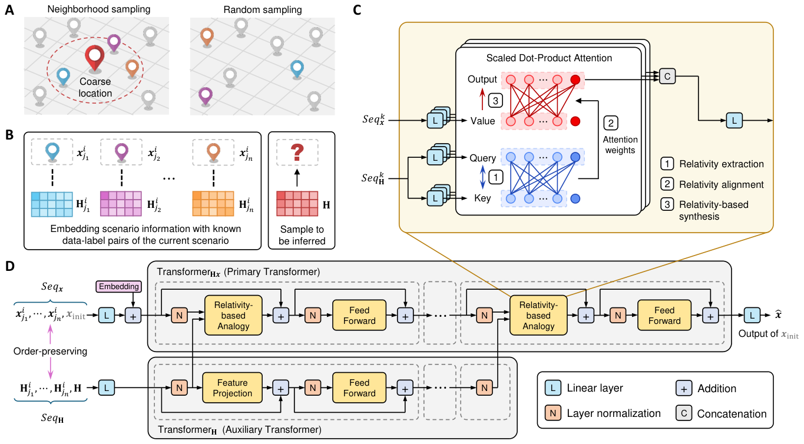
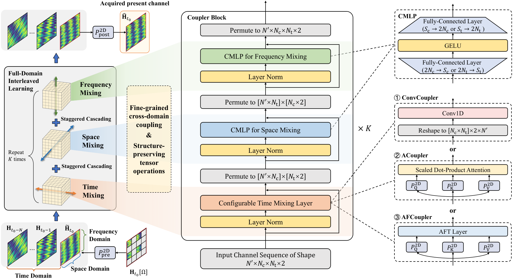
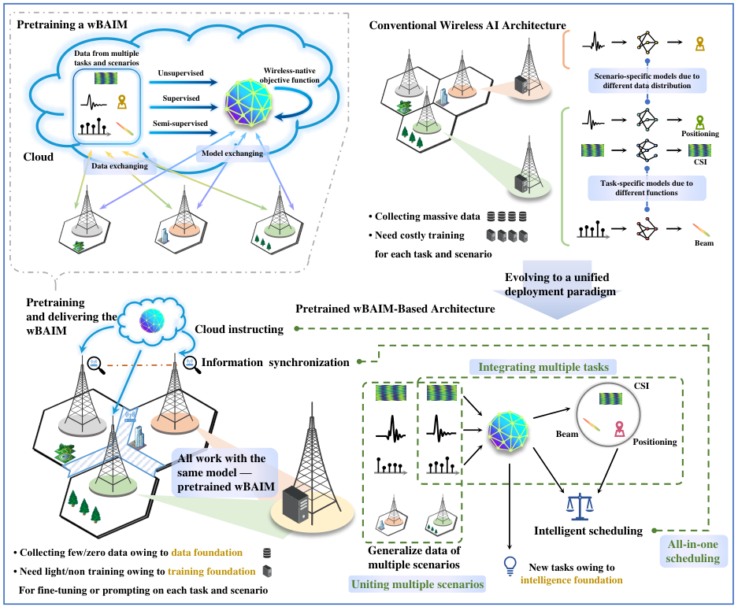

Wireless-native AI systems
Building AI-native architectures and systems tailored to the physical characteristics of wireless data and the fundamental requirements of wireless systems.
Wireless foundation models · Agentic AI-RAN
WIRELESS COMMUNICATIONS × ARTIFICIAL INTELLIGENCE
Now, I am a Research Scientist at Huawei, working on wireless AI. I joined Huawei in July 2026 through the Top Minds Program （天才少年计划）. My research explores how to design AI models and systems that capture the physical laws underlying wireless data and generalize across tasks and scenarios.
Previously, I pursued doctoral research in Information and Communication Engineering at Zhejiang University, advised by Prof. Zhaoyang Zhang （张朝阳）. I earned my bachelor’s degree in Information Engineering at Zhejiang University, where I was a member of the Mixed Class of Chu Kochen Honors College （竺可桢学院混合班）.
Building AI-native architectures and systems tailored to the physical characteristics of wireless data and the fundamental requirements of wireless systems.
Wireless foundation models · Agentic AI-RAN
Reimagining wireless air-interface protocols and algorithms with AI to enhance transmission and sensing, enabling adaptive operation across diverse radio environments.
Intelligent channel measurement · AI transceivers · AI sensing systems
Representative work on wireless intelligence. Full list on Google Scholar ↗

arXiv:2504.08811 · last updated August 2026
Analogical learning exploits invariant physical relationships across scenarios through reference frames and relative representations. The specially designed Mateformer enables joint learning across wireless scenarios with different scattering environments and system configurations, and seamless adaptation to unseen scenarios without retraining.

Engineering · Accepted · arXiv:2606.22038 ↗
Coupler interleaves temporal, spatial, and frequency-domain learning within a wireless-native backbone. Complex-valued mixing preserves channel structure, while configurable temporal modules support lightweight implementations. Experiments on simulated and measured channels demonstrate accurate, robust channel deduction with substantially fewer parameters than the evaluated baselines.
IEEE Journal on Selected Areas in Communications, 2025
Channel deduction combines historical CSI with a coarse current estimate, substantially alleviating the respective limitations of estimation and prediction. Recurrent and attention-based CDNets enable continuous acquisition despite unknown movement and error propagation, with pilot overhead as low as roughly one-tenth of evaluated estimation baselines.

IEEE Wireless Communications, 2024 · ESI Highly Cited Paper
This work outlines wireless big AI models that integrate multiple tasks, unify heterogeneous scenarios, and coordinate network-wide decisions. It introduces design principles and pilot studies for general-purpose wireless intelligence, then maps challenges in data, pretraining, adaptation, and deployment.
Released in 2023, this work contributed to the earliest discussions on wireless foundation models. The subsequent work, Towards wireless native big AI model (Science China Information Sciences, 2025), further examines the distinct scientific foundations, objectives, and design principles of wireless intelligence.
JUL 2026 — PRESENT
Research Scientist · Wireless AI
Top Minds Program （天才少年计划）
SEP 2021 — JUN 2026
Doctoral research · Information and Communication Engineering
Advisor: Prof. Zhaoyang Zhang
SEP 2017 — JUN 2021
Undergraduate studies · Information Engineering
Mixed Class, Chu Kochen Honors College （竺可桢学院混合班）
国家自然科学基金青年学生基础研究项目（博士研究生）
支持多场景泛化的无线AI模型架构与智能接收处理算法
Wireless AI Model Architecture and Intelligent Receive Processing Algorithm with Multi-Scenario Generalization
Wireless AI models often perform well in the environments used for training but struggle when propagation conditions or system configurations change. Adapting them to every new scenario can require additional data collection and model training, increasing deployment costs and limiting reliability.
This project investigates how wireless AI models can recognize and exploit relationships shared across different cellular scenarios. It focuses on generalization mechanisms, model architectures that accommodate multiple scenarios, and intelligent receive-processing algorithms. The aim is to reduce dependence on scenario-specific retraining and make intelligent communication more adaptable and practical.
IEEE WCNC · 2024, 2025, 2026
IEEE JSAC, TWC, WCM, TCOM, IoTJ, among others.